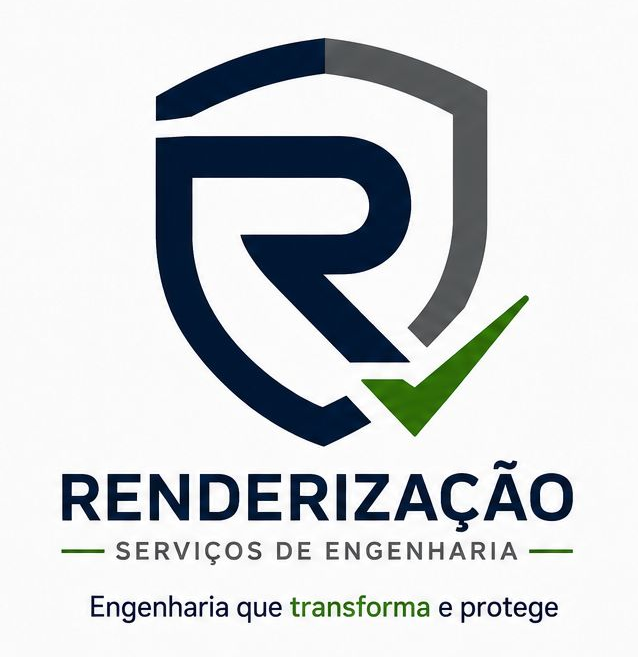

Segurança do Trabalho
Gestão de SST, PGR, inventário de riscos, eSocial SST, auditorias e adequação às Normas Regulamentadoras.
Carregando portal técnico...

Eng. Christian Guerem
CREA-PR 200142/D
Um canal direto para solicitar atendimento técnico, entender os serviços e entrar em contato com a Renderização Serviços de Engenharia.
Gestão de SST, PGR, inventário de riscos, eSocial SST, auditorias e adequação às Normas Regulamentadoras.
Laudos de insalubridade, periculosidade, ergonomia, pareceres, relatórios e estudos técnicos.
Perícia trabalhista, perícias de engenharia civil, assistência técnica judicial e extrajudicial.
Treinamentos de NRs, CIPA, SIPAT, DDS, integração e capacitações personalizadas para empresas.
Vistorias imobiliárias, inspeções prediais, recebimento de imóveis, patologias e pareceres técnicos.
Assessoria técnica, regularização documental, suporte em fiscalizações e apoio técnico para empresas.
Risco de decisão por achismo
Documentação frágil
Multas e passivos
Retrabalho e insegurança
Critério técnico
Documentação organizada
Responsável técnico identificado
ART quando aplicável
Obras, materiais, execução, acompanhamento técnico e controle de campo.
Ver fotosRedes, drenagem, infraestrutura urbana, acompanhamento e registros técnicos.
Ver fotosAnálise técnica para demandas judiciais, extrajudiciais e pareceres.
Ver fotosAvaliação de imóveis, patologias construtivas e documentação técnica.
Ver fotosEnsaios, coletas, verificações em campo e apoio técnico para obras.
Ver fotosEscolha o serviço, informe seu nome ou empresa e envie uma mensagem pronta pelo WhatsApp.
Cada empresa possui características diferentes. O orçamento é personalizado conforme atividade, riscos, local e escopo.
Sim, quando aplicável ao serviço técnico contratado.
Sim. Atendemos desde pequenas empresas até demandas maiores, conforme escopo técnico.
Sim, atuamos com perícias e assistência técnica judicial/extrajudicial.
Não. Atendemos Ponta Grossa e região, conforme disponibilidade.
Base em Ponta Grossa – PR, com atendimento técnico regional.
📍 Abrir no Google Maps📍 Ponta Grossa – PR e região
📲 (42) 99906-0610
✉️ contato@renderengenharia.com.br
📸 @christianguerem
🌐 renderengenharia.com.br